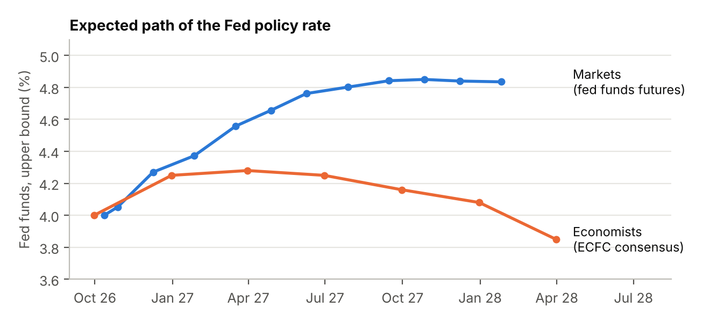

Market outlook, investment universe and strategic asset allocation for Round 1 of the challenge.
AMC 2026, Round 1 · Group 3: Arauz, Di Pietro, Musi, Rocco, Rotondò, Selmi
Our reading of the macro picture is that 2026 has been a year of stagflation, that economists expect a return to goldilocks in 2027, and that markets do not share this optimism. Fed funds futures, in fact, price about 3.4 further hikes, reaching roughly 100 basis points above what economists forecast. Hence, we do not build the portfolio around a single regime, but hold assets that perform in each of them.
We classify each economy into the four regimes defined by the direction of growth and inflation, using the Bloomberg consensus forecasts. During 2026 inflation rose in every region, in the United States and in the emerging economies it did so while growth was slowing: US CPI went from 2.7% to 3.4% and real GDP growth fell from 2.6% to 1.8%, which places both economies in stagflation. For 2027, the consensus expects growth to remain steady or to rise and inflation to fall in every region, the pattern of a goldilocks economy (Table 1). [1]
Behind these numbers, the US economy is slowing gently rather than contracting. Unemployment is stable at about 4.2% and payroll growth has eased to about 60,000 jobs a month, while private investment remains the strongest component of demand, having grown at an annualised 7.4% in the third quarter. Inflation is still the main concern, with core PCE at 3.3%. Europe continues to grow slowly, at 1.3–1.6%, whereas the emerging economies combine rising growth with monetary easing, as their central banks are expected to cut rates from 6.3% to about 5.0% by early 2028. [1]
| Region | GDP Q4 26 | GDP Q4 27 | CPI Q4 26 | CPI Q4 27 | Regime 2026 |
|---|---|---|---|---|---|
| United States | 2.1% | 2.1% | 3.5% | 2.1% | Stagflation |
| Developed economies | 1.8% | 1.9% | 3.9% | 2.5% | Overheated |
| Emerging economies | 3.9% | 4.4% | 3.6% | 2.9% | Stagflation |
After the September hike the Fed funds target range stands at 3.75–4.00%, and the path of the policy rate is where economists and markets disagree most. Economists expect one further hike followed by cuts that would bring the rate to 3.85% by early 2028, while fed funds futures price about 3.4 additional hikes, to an upper bound of about 4.84% by the end of 2027 (Figure 1). [1, 2]
If the economists are right, bonds should rally and growth assets benefit from lower rates; if the markets are right, inflation remains sticky and both bonds and equities come under pressure. We read this gap as the clearest evidence that the next regime is genuinely uncertain, and it is the starting point of our allocation.

| Indicator | 1 year ago | Latest |
|---|---|---|
| US Treasury 1-month yield | 4.20% | 4.13% |
| US Treasury 2-year yield | 3.60% | 4.80% |
| US Treasury 10-year yield | 4.14% | 5.24% |
| US Treasury 30-year yield | 4.72% | 5.60% |
| 5-year breakeven inflation | – | 2.34% |
| 10-year real yield (TIPS) | – | 2.87% |
| US investment-grade spread (OAS) | 0.75% | 0.82% |
| US high-yield spread (OAS) | 2.84% | 3.15% |
| VIX | – | 15.4 |
| EUR/USD, consensus Q3 2026 → Q4 2027 | 1.13 | 1.17 |
The indicators in Table 2 point to four features of the current market that shape our universe. The Treasury curve has shifted up by 80–130 basis points from the one-year maturity onwards, so that bonds once again offer a meaningful income. The inflation priced by the market, 2.34% over five years, is lower than the consensus forecast of about 2.8% for the next four quarters, which makes inflation protection inexpensive. Credit spreads remain tight, so that credit offers little compensation for its risk, and the consensus expects a mild weakening of the dollar, which would support non-US assets measured in USD.
The result is eight strategic ETFs — three equity, three fixed income, two real assets — plus one T-bill ETF used only as a risk-management tool.
Equity carries the equity risk premium, the most reliable source of long-run excess return. Instead of a single world ETF we hold three regional blocks: this gives us control over the regional mix and makes our outlook visible in the portfolio.
Why we chose it. The US is the deepest and most innovative equity market: it represents 64% of the MSCI ACWI [6]. US companies have delivered the strongest earnings growth of the last decade, driven by technology and, more recently, the investment cycle in artificial intelligence, visible in the strength of private investment. US equity is therefore the main source of expected return in our portfolio.
Why VTI and not SPY or VOO. SPY and VOO hold the 500 largest companies; VTI holds about 3,500, adding mid and small caps that are more sensitive to domestic growth and to falling rates, and slightly less concentrated in the largest technology names.
Risks we accept. High valuations and concentration in mega caps; with the 10-year yield at 5.24% bonds are a serious alternative, which compresses the equity risk premium. We limit these risks with the concentration cap and by holding equity outside the US.
Why we chose it. We do not want the portfolio to depend on one economy. Developed ex-US markets (Europe, Japan, UK, Canada, Australia, South Korea) trade at a valuation discount to the US and have a different sector mix — more financials, industrials and healthcare, less technology — so they respond differently to the same shocks. The fund is unhedged: the expected weakening of the dollar (EUR/USD +3.5% to end-2027) would add to its returns in USD.
Why VEA and not EFA or VXUS. EFA excludes Canada and small caps; VEA includes both. We preferred VEA to an all-in-one ex-US fund such as VXUS to size emerging markets separately.
Risks we accept. With European growth expected at only 1.3–1.6%, the case for this position rests on valuations rather than on earnings momentum, and it may take time to pay off. Many European and Japanese companies are large exporters, which leaves them exposed to tariffs and trade tensions, and since the fund is unhedged, a stronger dollar would reduce its value in USD.
Why we chose it. Emerging markets offer the best macro combination of the three regions: growth rising from 3.9% to 4.4% in 2027, inflation falling and central banks easing by about 140 bp [1], with current-account surpluses of about 3% of GDP that reduce their dependence on foreign capital. They also offer lower valuations and access to the semiconductor supply chain (Taiwan, Korea). A separate position lets us hold them at least at market weight.
Why IEMG and not EEM. IEMG includes small caps (IMI index) and is cheaper.
Risks we accept. Emerging markets are more volatile than developed ones and carry political and regulatory risk, especially in China, where government intervention can change the outlook for entire sectors. They also tend to suffer when the dollar strengthens and US rates rise, as capital flows back to the United States. Finally, the position partly overlaps with VEA: South Korea is classified as Developed by FTSE since 2009 [7] but remained Emerging for MSCI in June 2026 [8], so it is held in both funds.
Bonds lower the volatility of the portfolio, which is necessary to stay within the 7–9% risk budget, and protect it in a recession with falling inflation. We hold three different sources of fixed-income return: US nominal rates, non-US rates and US real rates.
Why we chose it. BND holds the US investment-grade market: Treasuries, agency mortgage-backed securities and IG corporate bonds, with an intermediate duration. With the 10-year yield at 5.24% and the 2-year at 4.80%, bonds pay a meaningful income; economists expect the 10-year yield to fall to about 4.6% by end-2027 [1], which would add a capital gain. Above all, BND is our insurance against a recession: when growth and inflation fall, central banks cut and bond prices rise.
Why intermediate duration, and not TLT. The US budget deficit is expected at about 6.5% of GDP and public debt at 105% of GDP [1]: a persistent supply of Treasuries may keep long-term yields high. Intermediate duration captures most of the recession hedge with much less of this risk. We excluded high-yield bonds: with a spread of 3.15% they pay little for a credit risk that rises exactly when equities fall.
Risks we accept. Since 2021 the stock–bond correlation has turned positive: when inflation is the problem, bonds and equities can fall together, as in 2022. Futures also price further Fed hikes.
Why we chose it. Rate cycles outside the US are not synchronised with the Fed: the ECB rate is about 2.85% and expected to ease to 2.5% by early 2028, and the euro-area 10-year yield is expected to fall from 3.9% to 3.7% [1]. BNDX therefore diversifies the duration risk of BND. Because it is hedged, it behaves like a bond and not like a currency position; with US short rates above European and Japanese rates, the hedge also earns the interest-rate differential.
Why BNDX and not IGOV. IGOV is unhedged: currency moves would add equity-like volatility to the defensive part of the portfolio.
Risks we accept. A global inflation shock would push yields up everywhere at once.
Why we chose it. Inflation hurts stocks and bonds at the same time, and 2026 has been a year of rising inflation. TIP is the most direct protection, and today it is cheap: the 5-year breakeven (2.34%) is below the consensus CPI for the next four quarters (2.8%) and in line with the consensus for 2028 (2.3%) [1, 4]. The real yield of 2.87% means TIP pays a solid return even if inflation simply returns to target.
Why TIP and not STIP. STIP holds only 0–5 year maturities. We preferred TIP because, with real yields at their highest in years, we want to lock in some real-rate duration.
Risks we accept. TIPS protect against inflation, not against rising real yields: if real rates keep increasing, TIP can lose value even while inflation is high, as happened in 2022. Conversely, if inflation falls back faster than the market expects, the inflation adjustment shrinks and TIP is likely to underperform nominal bonds such as BND.
Real assets protect the portfolio in the two regimes in which equities and nominal bonds can fall together — high inflation and supply shocks — and are the least correlated part of the universe.
Why we chose it. Gold has no credit or counterparty risk and has historically held its value in stagflation, geopolitical crises and periods of dollar weakness. Official demand has been a structural support: central banks bought about 850 tonnes in 2025 [9]. With an uncertain outlook, high US public debt and an expected weaker dollar, we consider gold a necessary insurance.
Why GLD and not IAU. Both hold physical gold; GLD is the largest and most liquid gold ETF and has the longest history. IAU is cheaper, but for a position held a few months liquidity matters more than fees.
Risks we accept. Gold pays no income, and with real yields near 2.9% the opportunity cost is high. It is volatile and has rallied strongly: the LBMA price averaged a record USD 4,873/oz in Q1 2026, and central-bank buying slowed sharply in that quarter (revised to 57 tonnes, with visible selling) [9].
Why we chose it. Commodities perform best when inflation comes from supply shocks — energy disruptions, geopolitical conflicts, bad harvests — the scenario in which both stocks and bonds lose, as in 2022. They complement gold: gold reacts to monetary and geopolitical stress, commodities to the real economy. The total-return index also earns the T-bill rate on the collateral.
Why BCI and not DBC. BCI follows the Bloomberg Commodity Index: 23 commodities, with no sector above 33% and no single commodity above 15% [11]. DBC is about half energy and more expensive [10].
Risks we accept. Roll costs in markets in contango and sharp falls in a recession, when demand for raw materials collapses.
Role. BIL is not a strategic position but a tool to manage the risk budget. If the eight strategic ETFs together have an ex ante volatility above 9%, we scale the risky portfolio down to the 8% target and invest the remainder in BIL; if the volatility is already within the 7–9% band, BIL is not held at all. Since T-bills barely move, BIL can only bring the volatility of the portfolio down, never raise it.
Why BIL and not cash. The Sharpe Ratio is measured on returns in excess of the 1-month T-bill (4.13%) [3]. Cash earns nothing, so it has an excess return of about −4% a year and lowers the Sharpe Ratio; BIL earns about the T-bill rate, so its excess return is close to zero.
Why BIL and not SGOV. SGOV is an equivalent and slightly cheaper alternative; we use BIL because its longer track record (2007, against 2020 for SGOV) gives more data if the backtest sample is extended.
Long-only ETFs on broad asset classes; no leverage; few positions; cash earns no interest. [List of the ETFs the allocation may hold, with one-word role each. i.e. VT (global equity), GOVT (Treasuries), STIP (inflation protection), GLD (gold), BCI (commodities), BIL (cash substitute).]
| Constraint | Reason (today’s model errors) |
|---|---|
| Concentration: [e.g. max xx% per ETF] | [reason] |
| Regions: [e.g. …] | [reason] |
| Liquidity: [e.g. …] | [reason] |
| ETF | Capital weight | Risk contribution |
|---|---|---|
| [Ticker] | [xx.x]% | [xx.x]% |
| [Ticker] | [xx.x]% | [xx.x]% |
| [Ticker] | [xx.x]% | [xx.x]% |
| [Ticker] | [xx.x]% | [xx.x]% |
| [Ticker] | [xx.x]% | [xx.x]% |
| [Ticker] | [xx.x]% | [xx.x]% |
| [Ticker] | [xx.x]% | [xx.x]% |
| Cash | [x.x]% | 0.0% |
| Total | 100.0% | 100.0% |
Equal weight: wi = 1/N. Risk parity: wi ∝ 1/σi, volatilities from our own data ([period]).
| Our SAA | Equal weight | Risk parity | ||||
|---|---|---|---|---|---|---|
| ETF | Weight | Risk contr. | Weight | Risk contr. | Weight | Risk contr. |
| [Ticker] | ||||||
| [Ticker] | ||||||
| [Ticker] | ||||||
| [Ticker] | ||||||
| [Ticker] | ||||||
| [Ticker] | ||||||
| [Ticker] | ||||||
| Volatility | [x.x]% | [x.x]% | [x.x]% | |||
[One paragraph: where the rules disagree with our weights, and what justifies our weights.]
| Tuning sample | Hold-out sample | |
|---|---|---|
| Mean return, annualised (t-statistic) | [x.x]% ([x.x]) | [x.x]% ([x.x]) |
| Volatility, annualised | [x.x]% | [x.x]% |
| Maximum drawdown | [−xx.x]% | [−xx.x]% |
| One-month 5% VaR | [x.x]% | [x.x]% |
| Sharpe Ratio | [x.xx] | [x.xx] |
Backtested Sharpe Ratio: [x.xx]. Discounted value we consider realistic: [x.xx].
Justification: [rule of thumb of Class 4 (divide by 2), larger discount for more tunable parameters / variations tried; comparison with the hold-out Sharpe Ratio.]
Matterhorn Capital Management is a simulated portfolio managed by students for the USI Asset Management Challenge. All figures are based on virtual capital and are presented for educational purposes only. Past performance is not indicative of future results. Nothing in this report constitutes investment advice or an offer to buy or sell any security.